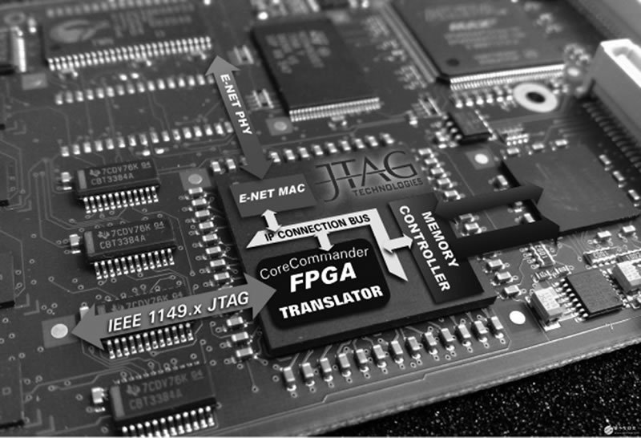
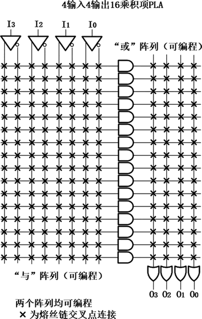
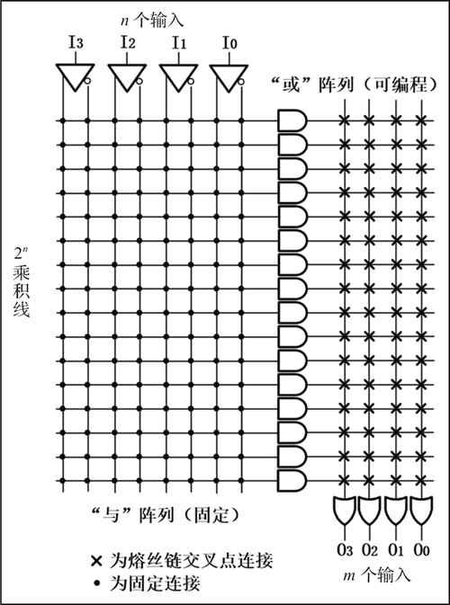
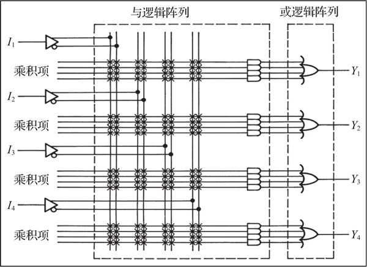
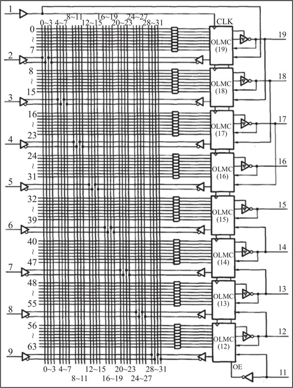
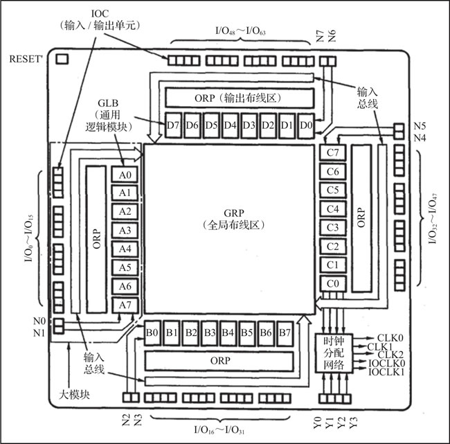
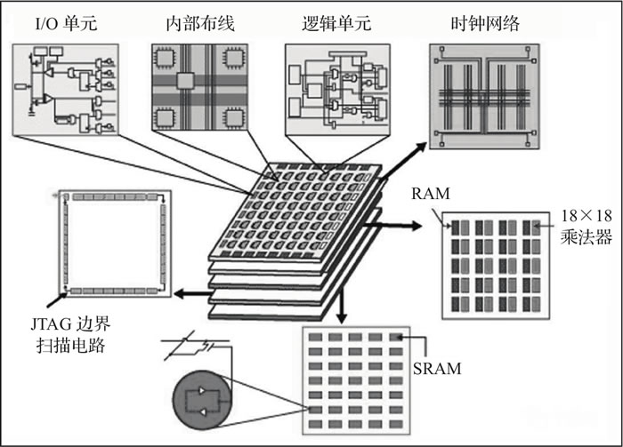
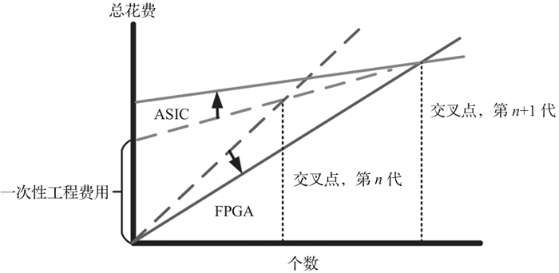

首页 > 编程笔记
FPGA是什么（超级详细）
FPGA 是一种以数字电路为主的集成芯片，于 1985 年由 Xilinx 创始人之一 Ross Freeman 发明，属于可编程逻辑器件（Programmable Logic Device，PLD）的一种。这个时间比著名的摩尔定律出现的时间晚 20 年左右，但是 FPGA 一经发明，后续的发展速度之快，超出大多数人的想象。
图 1 中给出了 FPGA 芯片的实物图：
为了解决这一问题，20 世纪 70 年代，可编程逻辑阵列（Programmable Logic Array，PLA）问世，PLA 中包含了一些固定数量的与门、非门，分别组成了“与平面”和“或平面”，即“与连接矩阵”和“或连接矩阵”，以及仅可编程一次的连接矩阵（因为此处编程是基于熔丝工艺的），因此可以实现一些相对复杂的与、或多项表达式的逻辑功能，PLA 内部结构如图 2 所示：
与 PLA 同时问世的还有可编程只读存储器（Programmable Read-Only Memory，PROM），其内部结构如图 3 所示。与 PLA 相同，PROM 内部包含“与连接矩阵”和“或连接矩阵”，但是与门的连接矩阵是硬件固定的，只有或门的连接矩阵可编程。
若只有与门的连接矩阵可编程，而或门的连接矩阵是硬件固定的，那么这种芯片叫作可编程阵列逻辑器件（Programmable Array Logic，PAL），根据输出电路工作模式的不同，PAL 可分为三态输出、寄存器输出、互补输出，但 PAL 仍使用熔丝工艺，只可编程一次。PAL 的结构图如图 4 所示。
在 PAL 的基础上，又发展出了通用阵列逻辑器件（Generic Array Logic，GAL），相比于 PAL，GAL 有两点改进：
GAL 的结构图如图 5 所示：
早期的 PLD 主要由上述四种类型的芯片组成，即 PROM、PLA、PAL 和 GAL。它们的共同特点是可以实现速度特性较好的逻辑功能，但由于其结构过于简单，所以只能实现规模较小的数字电路。
随着科技的发展、社会的进步，人们对芯片的集成度要求越来越高。早期的 PLD 产品不能满足人们的需求，复杂可编程逻辑器件（Complex Programmable Logic Device，CPLD）诞生。可以把 CPLD 看作 PLA 器件结构的延续，一个 CPLD 器件也可以看作若干个 PLA 和一个可编程连接矩阵的集合。CPLD 的内部结构图如图 6 所示。
FPGA 比 CPLD 早几年问世，与 CPLD 并称为高密度可编程逻辑器件，但它们有着本质的区别。FPGA 芯片的内部架构并没有沿用类似 PLA 的结构，而是采用了逻辑单元阵列（Logic Cell Array，LCA）这样一个概念，改变了以往 PLD 器件大量使用与门、非门的思想，主要使用查找表和寄存器。
除此之外，FPGA 和 CPLD 在资源类型、速度等方面也存在差异，如下表所示。
FPGA 的类型从内部实现机理来讲，可以分为基于 SRAM 技术、基于反熔丝技术、基于 EEPROM/Flash 技术。就电路结构来讲，FPGA 可编程是指三个方面的可编程：可编程逻辑块、可编程 I/O、可编程布线资源。可编程逻辑块是 FPGA 可编程的核心，我们上面提到的三种技术也是针对可编程逻辑块的技术。
FPGA 的结构图如图 8 所示。
以单片机举例说明，我们都知道，单片机功能强大，几乎无所不能，而 FPGA 与之相比只强不弱。因为只要单片机能实现的功能，FPGA 就一定能实现，当然这需要加一个大前提——在 FPGA 资源足够多的情况下。但是 FPGA 能实现的功能，单片机却不一定能够轻松实现，这是不争的事实，如果你不相信，那只能说明你还不了解 FPGA。
说到这里，读者不禁要问，既然 FPGA 这么厉害，为什么单片机的使用范围更广？那是因为在商业中，价格往往是影响产品的重要因素之一。
单片机的价格要远远低于 FPGA，而且根据性能和资源的不同，FPGA 的价格也存在很大差异，单枚 FPGA 芯片的价格从几十元到几十万元不等。与之相比，单片机的价格要便宜很多，同样的功能我们如果可以用价格低廉的单片机实现，就不会选择相对昂贵的 FPGA 了，除非单片机满足不了功能需求。所以公司自己进行开发时，为了节约成本，可能会选择更加便宜的单片机，而不会选择相对昂贵的 FPGA，因为单片机、ARM 这种微处理器的需求量很大，所以价格上更有优势。
但无论是单片机、ARM 还是 FPGA，它们都只是一种帮助我们实现功能的工具，具体如何选择，需要根据具体问题具体分析。总之，没有万能的工具，只有符合生产需求的工具。我们不应对某种工具存在偏见，要综合考虑。同样，当你了解得更多的时候，你会发现这些工具都需要掌握。
FPGA 的应用场景远没有单片机和 ARM 这么多，主要针对单片机和 ARM 无法解决的问题。比如要求灵活高效、高吞吐量、低批量延时、快速并行运算、可重构、可重复编程、可实现定制性能和定制功耗的情况，这些工作只能由FPGA承担。
而相对于出于专门目的而设计的集成电路（Application Specific Integrated Circuit，ASIC），FPGA 具有 3 点优势：
因此，FPGA 通常在数字信号处理、视频处理、图像处理、5G 通信领域、医疗领域、工业控制、云服务、加速计算、人工智能、数据中心、自动驾驶、芯片验证等领域发挥着不可替代的作用。只有掌握了通用的 FPGA 设计方法，才能在 FPGA 独领风骚的领域中大展宏图。
FPGA 与 GPU 性能对比图如图 10 所示：

图 10 FPGA与GPU的性能对比图
FPGA 软件方向：以软件开发为主，开发 FPGA 在数据分析、人工智能、机器视觉等领域的加速应用能力，主要采用 OpenCL 和 HLS 技术实现软硬件协同开发。
FPGA 硬件方向：以逻辑设计为主，针对FPGA特定领域的应用设计、集成电路设计以及芯片验证能力。
FPGA 最初的应用领域是通信领域，但是随着信息产业和微电子技术的发展，FPGA 技术已经成为信息产业最热门的技术之一，应用范围扩大，遍及航空航天、汽车、医疗、广播、测试测量、消费电子、工业控制等热门领域，而且随着工艺的发展和技术的进步，从各个角度开始渗透到生活当中。
图 1 中给出了 FPGA 芯片的实物图：

图 1 FPGA芯片实物图
图 1 FPGA芯片实物图
FPGA 发展历程
在 PLD 未发明之前，工程师使用包含若干个逻辑门的离散逻辑芯片进行电路系统的搭建，复杂的逻辑功能实现起来较为困难。为了解决这一问题，20 世纪 70 年代，可编程逻辑阵列（Programmable Logic Array，PLA）问世，PLA 中包含了一些固定数量的与门、非门，分别组成了“与平面”和“或平面”，即“与连接矩阵”和“或连接矩阵”，以及仅可编程一次的连接矩阵（因为此处编程是基于熔丝工艺的），因此可以实现一些相对复杂的与、或多项表达式的逻辑功能，PLA 内部结构如图 2 所示：

图 2 PLA内部结构
图 2 PLA内部结构
与 PLA 同时问世的还有可编程只读存储器（Programmable Read-Only Memory，PROM），其内部结构如图 3 所示。与 PLA 相同，PROM 内部包含“与连接矩阵”和“或连接矩阵”，但是与门的连接矩阵是硬件固定的，只有或门的连接矩阵可编程。

图 3 PROM内部结构
图 3 PROM内部结构
若只有与门的连接矩阵可编程，而或门的连接矩阵是硬件固定的，那么这种芯片叫作可编程阵列逻辑器件（Programmable Array Logic，PAL），根据输出电路工作模式的不同，PAL 可分为三态输出、寄存器输出、互补输出，但 PAL 仍使用熔丝工艺，只可编程一次。PAL 的结构图如图 4 所示。

图 4 PAL结构图
图 4 PAL结构图
在 PAL 的基础上，又发展出了通用阵列逻辑器件（Generic Array Logic，GAL），相比于 PAL，GAL 有两点改进：
- 采用了电可擦除的 CMOS 工艺，可多次编译，增强了器件的可重配置性和灵活性；
- 采用了可编程的输出逻辑宏单元（Output Logic Macro Cell，OLMC），通过编程 OLMC 可将 GAL 的输出设置成不同状态，仅用一个型号的GAL就可以实现所有PAL器件输出电路的工作模式，增强了器件的通用性。
GAL 的结构图如图 5 所示：

图 5 GAL结构图
图 5 GAL结构图
早期的 PLD 主要由上述四种类型的芯片组成，即 PROM、PLA、PAL 和 GAL。它们的共同特点是可以实现速度特性较好的逻辑功能，但由于其结构过于简单，所以只能实现规模较小的数字电路。
随着科技的发展、社会的进步，人们对芯片的集成度要求越来越高。早期的 PLD 产品不能满足人们的需求，复杂可编程逻辑器件（Complex Programmable Logic Device，CPLD）诞生。可以把 CPLD 看作 PLA 器件结构的延续，一个 CPLD 器件也可以看作若干个 PLA 和一个可编程连接矩阵的集合。CPLD 的内部结构图如图 6 所示。

图 6 CPLD结构图
图 6 CPLD结构图
FPGA 比 CPLD 早几年问世，与 CPLD 并称为高密度可编程逻辑器件，但它们有着本质的区别。FPGA 芯片的内部架构并没有沿用类似 PLA 的结构，而是采用了逻辑单元阵列（Logic Cell Array，LCA）这样一个概念，改变了以往 PLD 器件大量使用与门、非门的思想，主要使用查找表和寄存器。
除此之外，FPGA 和 CPLD 在资源类型、速度等方面也存在差异，如下表所示。
| 器件种类/特性 | FPGA | CPLD |
|---|---|---|
| 内部结构 | 查找表（Look Up Table） | 乘积项（Product Term） |
| 程序存储 | 内部为 SRAM 结构，外挂 EEPROM 或 Flash 存储程序 | 内部为 EEPROM 或 Flash |
| 资源类型 | 触发器资源丰富 | 组合逻辑资源丰富 |
| 集成度 | 高 | 低 |
| 使用场合 | 完成比较复杂的算法 | 完成控制逻辑 |
| 速度 | 快 | 慢 |
| 其他资源 | RAM、PLL、DSP 等 | —— |
| 保密性 | 一般不能保密（可以使用加密核） | 可加密 |
FPGA 的类型从内部实现机理来讲，可以分为基于 SRAM 技术、基于反熔丝技术、基于 EEPROM/Flash 技术。就电路结构来讲，FPGA 可编程是指三个方面的可编程：可编程逻辑块、可编程 I/O、可编程布线资源。可编程逻辑块是 FPGA 可编程的核心，我们上面提到的三种技术也是针对可编程逻辑块的技术。
FPGA 的结构图如图 8 所示。

图 8 FPGA结构图
图 8 FPGA结构图
FPGA 的技术优势
许多读者都知道 FPGA 功能强大，但它强大在哪儿？以单片机举例说明，我们都知道，单片机功能强大，几乎无所不能，而 FPGA 与之相比只强不弱。因为只要单片机能实现的功能，FPGA 就一定能实现，当然这需要加一个大前提——在 FPGA 资源足够多的情况下。但是 FPGA 能实现的功能，单片机却不一定能够轻松实现，这是不争的事实，如果你不相信，那只能说明你还不了解 FPGA。
说到这里，读者不禁要问，既然 FPGA 这么厉害，为什么单片机的使用范围更广？那是因为在商业中，价格往往是影响产品的重要因素之一。
单片机的价格要远远低于 FPGA，而且根据性能和资源的不同，FPGA 的价格也存在很大差异，单枚 FPGA 芯片的价格从几十元到几十万元不等。与之相比，单片机的价格要便宜很多，同样的功能我们如果可以用价格低廉的单片机实现，就不会选择相对昂贵的 FPGA 了，除非单片机满足不了功能需求。所以公司自己进行开发时，为了节约成本，可能会选择更加便宜的单片机，而不会选择相对昂贵的 FPGA，因为单片机、ARM 这种微处理器的需求量很大，所以价格上更有优势。
但无论是单片机、ARM 还是 FPGA，它们都只是一种帮助我们实现功能的工具，具体如何选择，需要根据具体问题具体分析。总之，没有万能的工具，只有符合生产需求的工具。我们不应对某种工具存在偏见，要综合考虑。同样，当你了解得更多的时候，你会发现这些工具都需要掌握。
FPGA 的应用场景远没有单片机和 ARM 这么多，主要针对单片机和 ARM 无法解决的问题。比如要求灵活高效、高吞吐量、低批量延时、快速并行运算、可重构、可重复编程、可实现定制性能和定制功耗的情况，这些工作只能由FPGA承担。
而相对于出于专门目的而设计的集成电路（Application Specific Integrated Circuit，ASIC），FPGA 具有 3 点优势：
1) 灵活性
通过对 FPGA 编程，FPGA 可以执行 ASIC 能够执行的任何逻辑功能。FPGA 的独特优势在于其灵活性，即随时可以改变芯片功能，在技术还未成熟的阶段，这种特性能够降低产品的成本与风险，在 5G 技术普及初期，这种特性尤为重要。2) 上市时间缩短
对 FPGA 编程后即可直接使用，FPGA 方案无须经历三个月至一年的芯片流片周期，为企业争取了产品上市时间。3) 有一定成本优势
FPGA 与 ASIC 的主要区别在于 ASIC 方案有固定成本而 FPGA 方案几乎没有，在使用量小的时候，采用 FPGA 方案无须一次性支付几百万美元的流片成本，同时也不用承担流片失败的风险，此时 FPGA 方案的成本低于 ASIC 的，随着使用量增加，FPGA 方案在成本上的优势逐渐减少，超过某一使用量后，由于大量流片产生了规模经济，因此 ASIC 方案在成本上更有优势，如下图所示：

图 9 FPGA方案和ASIC方案的成本比较
图 9 FPGA方案和ASIC方案的成本比较
因此，FPGA 通常在数字信号处理、视频处理、图像处理、5G 通信领域、医疗领域、工业控制、云服务、加速计算、人工智能、数据中心、自动驾驶、芯片验证等领域发挥着不可替代的作用。只有掌握了通用的 FPGA 设计方法，才能在 FPGA 独领风骚的领域中大展宏图。
FPGA的应用方向
FPGA 介于软件和硬件之间，用它做接口、做通信，它就偏向硬件；用它做算法、做控制，它就偏向软件。随着人工智能、机器视觉的崛起，FPGA 更加偏向软件算法的异构，有和 GPU 一争高下的潜力。FPGA 与 GPU 性能对比图如图 10 所示：
图 10 FPGA与GPU的性能对比图
FPGA 软件方向：以软件开发为主，开发 FPGA 在数据分析、人工智能、机器视觉等领域的加速应用能力，主要采用 OpenCL 和 HLS 技术实现软硬件协同开发。
FPGA 硬件方向：以逻辑设计为主，针对FPGA特定领域的应用设计、集成电路设计以及芯片验证能力。
FPGA 最初的应用领域是通信领域，但是随着信息产业和微电子技术的发展，FPGA 技术已经成为信息产业最热门的技术之一，应用范围扩大，遍及航空航天、汽车、医疗、广播、测试测量、消费电子、工业控制等热门领域，而且随着工艺的发展和技术的进步，从各个角度开始渗透到生活当中。
关注公众号「站长严长生」，在手机上阅读所有教程，随时随地都能学习。内含一款搜索神器，免费下载全网书籍和视频。

微信扫码关注公众号